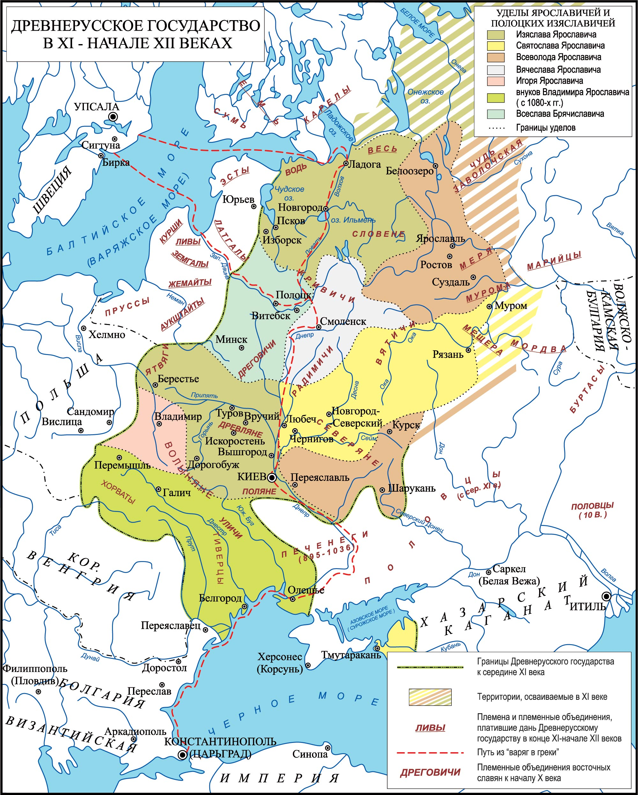
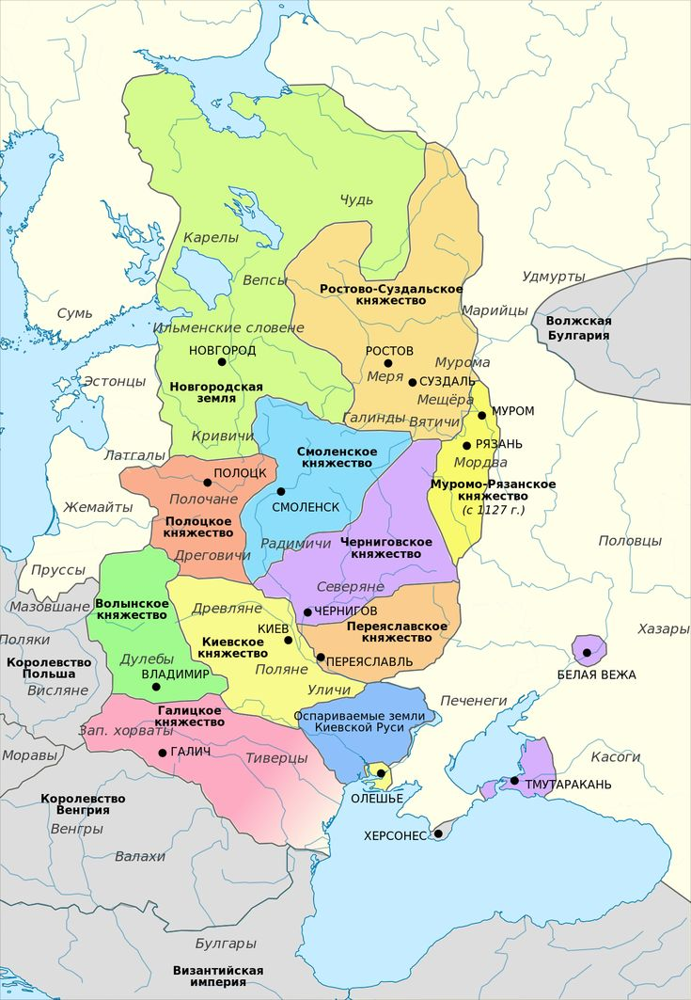

Древнерусское государство
Образование государства
Древнерусское государство (Киевская Русь) сформировалось в результате объединения восточнославянских племён под властью династии Рюриковичей. Согласно «Повести временных лет», в 862 году варяжский князь Рюрик был призван на княжение в Новгород, что традиционно считается началом русской государственности [[9]].
В 882 году князь Олег, регент при малолетнем сыне Рюрика Игоре, захватил Киев, убив местных правителей Аскольда и Дира. Объединив два ключевых центра — Новгород и Киев — Олег создал единое государство, контролировавшее важнейший торговый путь «из варяг в греки».

Территория и население
К концу X века Древнерусское государство простиралось от Балтийского моря на севере до причерноморских степей на юге, от Карпатских гор на западе до верховьев Оки и Волги на востоке [[1]]. Это была одна из крупнейших держав Европы того времени.
Население состояло из восточнославянских племён: полян, древлян, северян, вятичей, кривичей, радимичей, а также финно-угорских народов (чудь, меря) и балтских племён.
Военная организация
Основу военной силы составляла княжеская дружина, делившаяся на старшую (бояре, мужи) и младшую (гриди, детские, отроки). Дружина насчитывала тысячи профессиональных воинов [[12]].
Русские воины славились отвагой и мастерством ведения войны как на суше, так и на море. Флотилия русских ладей (моноксилов) была грозной силой на Чёрном море.
Основные восточнославянские племена в составе Руси
- Поляне — среднее Поднепровье, основа государственности (Киев)
- Ильменские словене — район Новгорода и озера Ильмень
- Древляне — лесные области к западу от полян
- Северяне — левобережье Днепра, бассейн Десны
- Вятичи — бассейн Оки
- Дреговичи, полочане, кривичи — западные и северо-западные земли
- Радимичи — междуречье Днепра и Десны
- Уличи и тиверцы — нижнее течение Днепра и Днестра
Правители Древней Руси X века
Рюрик (862-879)
Основатель династии Рюриковичей. Согласно летописи, был призван на княжение в Новгород вместе с братьями Синеусом и Трувором. Родоначальник русской княжеской династии, правившей до 1598 года [[9]].
Олег Вещий (879-912)
Регент при малолетнем Игоре. В 882 году объединил Новгород и Киев, создав единое государство. Совершил успешные походы на Константинополь (907, 911), заключил выгодные договоры с Византией. Прозван «Вещим» за мудрость и дальновидность [[12]].
Игорь Рюрикович (912-945)
Сын Рюрика. Продолжал политику укрепления государства. Совершил два похода на Византию (941, 944). Погиб при попытке повторного сбора дани с древлян. Его смерть привела к восстанию древлян и мести княгини Ольги [[17]].
Ольга (945-964)
Регентша при сыне Святославе. Жёстко подавила восстание древлян. Провела первую на Руси налоговую реформу (установила «уроки» и «погосты»). В 957 году посетила Константинополь и приняла христианство — стала первым христианским правителем Руси [[2]].
Святослав Игоревич (964-972)
Князь-воин, большую часть правления провёл в походах. Разгромил Хазарский каганат (965), воевал с Волжской Болгарией, совершил балканский поход против Византии. Погиб в бою с печенегами на днепровских порогах [[8]].
Владимир Святославич (980-1015)
В 988 году принял христианство и крестил Русь. Провёл административную реформу, укрепил границы государства. Построил систему оборонительных крепостей. Равноапостольный князь, канонизирован церковью [[36]].
